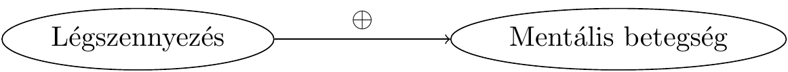
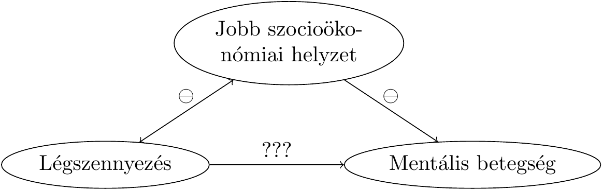
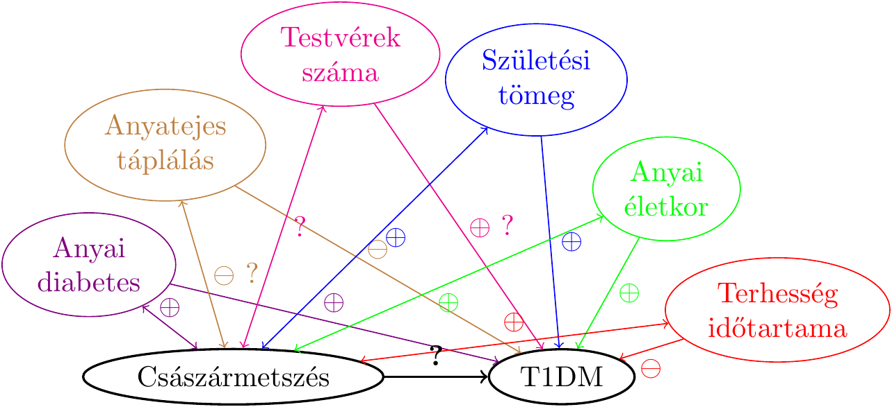

4 . fejezet Egy alapvető kutatásmódszertani kérdés
A statisztika tulajdonképpen az előző fejezettel befejeződött. Nem tudom megállni azonban, hogy ne hívjam fel a figyelmet pár általános, mondjuk úgy: kutatásmódszertani kérdésre. Azért nem, mert ezek borzasztó gyakran épp a statisztikát alkalmazunk!
felkiáltás ürügyén sikkandnak el. Soha nem szabad ugyanis egy dolgot elfelejteni: mindaz a statisztikai apparátus, amiről az elmúlt fejezetekben szó volt csak és kizárólag a mintavételi ingadozásból fakadó bizonytalanság kezelésére alkalmas, és a világon semmit nem mond egy kutatás összes többi hibaforrásáról! Ezért nagyon rossz, amikor valaki a következtető statisztika alkalmazásával kapott eredményeket, mondjuk a \(p\)-értékeket úgy kezeli, hogy akkor ezzel a kutatás hibáinak problémája le van tudva. A \(p\)-értékek nem egy kutatás hibázásának univerzális metrikái – simán előfordulhat, hogy egy kutatási domináns hibaforrását nem a mintavételi ingadozás jelenti! Éppen ezért fontos, hogy ismerjük ezek közül minimum a legfontosabb problémát, a confounding-ot, mely szinte minden társadalmi-gazdasági (és sok orvosi) vizsgálatban felmerül. Amíg ezt nem tisztáztuk egy vizsgálat kapcsán, addig tizedrangú kérdés, hogy a kapott eredmény a szó statisztikai értelmében szignifikáns-e.
A most következő leírásom orvosi példákat fog hozni13, de reményeim szerint közvetlenül látszódni fog, hogy ugyanez a kérdéskör hogyan jelenik meg más területeken is.
4.1 Az orvosi megismerés alapkérdései
Egy friss újsághír szerint egy svéd egyetem kutatói félmillió gyermek környezetét vizsgálták meg, és azt találták, hogy ahol magasabb a légszennyezettség, ott több a mentálisan beteg gyermek. A légszennyezés tehát mentális betegséget okoz! Vagy mégsem…?
Az orvostudomány egy jelentős része ilyen, és ehhez hasonló kérdésekre igyekszik választ adni: okoz-e mentális betegséget a légszennyezés? A mobiltelefon-használat agyrákot? A vöröshús-fogyasztás vastagbélrákot? A császármetszéssel születés megnöveli-e annak kockázatát, hogy a gyermeknek később 1-es típusú cukorbetegsége lesz? És ha az anya paracetamolt szed a terhesség alatt, attól lehet a gyermek autista? Itt van ez az új vérnyomás-csökkentő gyógyszerjelölt, vajon csökkenti-e tényleg a vérnyomást? És okozhat-e alvászavart mellékhatásként?
E kérdésekre számos módszerrel kereshetjük a választ. Alapul vehetünk biológiai (élettani, kórélettani) megfontolásokat, kereshetünk állatmodelleket, amik lehetővé teszik a jelenségek vizsgálatát, tekinthetünk analóg példákat más területről, gyárthatunk matematikai modellt, azonban a jelen cikksorozat tárgya egy más jellegű, ám egyre fontosabb módszer: az empirikus vizsgálat. Az empirikus annyit tesz: tapasztalati
, úgyhogy rögtön pontosítanom kell: a legrosszabb orvosi megismerési módszerek is tapasztalatokon alapulnak, ezért talán jobb, ha úgy mondjuk: szisztematikus empirikus vizsgálat. Empirikus, mert az alapján próbáljuk megválaszolni a kérdést, hogy begyűjtünk tényadatokat gyermekek környezetének légszennyezettségéről és a tényleges megbetegedéseikről, és szisztematikus, mert ezt nem ötletszerűen, hanem valamilyen terv szerint tesszük. A kérdés tehát adott: miután megvannak ezek az adatok, hogyan következtethetünk azokból arra, hogy okoz-e mentális betegséget a légszennyezés?
Első ránézésre könnyű dolgunk van: empirikusan dolgozunk ugyebár, ezért begyűjtünk tényadatokat gyermekek lakóhelyének légszennyezettségéről, és esetleges későbbi megbetegedéseikről. Szisztematikusan dolgozunk, ezért a mintavételt alkalmas terv szerint végezzük, például a népességnyilvántartó adataiból teljesen véletlenszerűen választunk ki kellően sok gyermeket. (Tehát véletlenül sem internetes kérdőívet küldünk ki, többek között a Megbetegítették a gyermekemet a légszennyezettséggel!!!
Facebook-csoport tagjainak, megkérve, hogy idézzenek fel az összefüggést megerősítő illetve cáfoló példákat.)
A kapott eredmények, a példa kedvéért: a 100 ezer nem légszennyezett helyen élő gyermek közül 1310-nél lépett fel mentális betegség, a 100 ezer légszennyezett környezetben felnövő közül azonban 3750-ben. A különbség drámai. Márpedig szisztematikusan dolgoztunk, a lehető legjobban: véletlenszerűen választott adatokkal, empirikusan vizsgáltuk a kérdést, ráadásul igen nagy mintán, úgyhogy hátradőlhetünk és nagy nyugalommal mondhatjuk: a légszennyezettség mentális betegséget okoz!
Vagy mégsem?
4.2 Az okozatiság nyomában
A válaszhoz induljunk egy picit távolabbról. Érdemes felidézni az előző alfejezetből, hogy milyen szerteágazóak azok a – fentihez hasonló – kérdések, melyekre választ szeretnénk adni az orvostudományban: Okoz-e agyrákot a mobiltelefon használata? A vörös hús fogyasztása vastagbélrákot? A császármetszéssel születés megnöveli-e annak kockázatát, hogy a gyermeknek később 1-es típusú cukorbetegsége lesz? És lehet-e a gyermek autista attól, hogy az anya paracetamolt szed a terhesség alatt? Itt van ez az új vérnyomáscsökkentő gyógyszerjelölt, vajon tényleg csökkenti-e a vérnyomást? Okozhat-e alvászavart mellékhatásként?
Ebben a listában igyekeztem, teljesen szándékosan, a lehető legkülönbözőbb kérdéseket összegyűjteni, melyekben látszólag egyetlen közös pont sincs. Ezt azért tettem, hogy még meglepőbb legyen a következő kijelentésem: azt állítom ugyanis, hogy bármennyire is különbözőnek tűnnek, valójában kivétel nélkül az összes felsorolt kérdés mögött – és milliónyi egyéb orvosi, egészségügyi kérdés mögött – pontosan ugyanaz a séma van! Persze, a konkrét részletek nagyon eltérnek, de ha ezektől megtisztítjuk az egyes kérdéseket, akkor a mélyben minden esetben ugyanazt találjuk.
Az egyik komponens: minden kérdésben található valami, amit teljesen általános szóval expozíciónak fogunk hívni. Ez szó szerint kitettséget
jelent, és tényleg azt is értjük alatta, hogy az alany ki volt téve valamilyen hatásnak. Ezt a legáltalánosabban értjük: a hatás lehet valami, amit szándékosan alkalmazunk az alanyon (pl. gyógyszert adunk neki), lehet valami, amit maga választ (pl. vörös húst fogyaszt), és olyasvalami is, aminek akaratán kívül van kitéve (pl. császármetszéssel született). Érdemes végignézni az összes előbbi példát, csakugyan mindegyikben azonosítható az expozíció, a mobiltelefon-használattól egészen a gyógyszerszedésig.
A másik komponens: minden kérdésben található valamiféle eredmény, kimenet – ezt fogjuk végpontnak hívni. Ez lesz az orvosilag lényeges, általunk vizsgált történés; ismét csak, érdemes egy pillanatra visszanézni az előbbi listára, és mindegyik elemnél megkeresni ezt, az agyráktól az alvászavarig.
Ezzel megvan a séma két oldala
, expozíció egyfelől, végpont másfelől, már csak egyetlen komponens hiányzik, amit vizsgálni akarunk minden ilyen és ezekhez hasonló kérdésben: az, hogy az expozíció és a végpont között van-e ok-okozati összefüggés. Szép szóval ezt hívhatjuk kauzalitásnak. Bármennyire is különbözőnek tűnnek a kérdések, e séma mindegyikre illeszkedik, mindegyikben azonosítható az expozíció, azonosítható a végpont, és mindegyikre igaz, hogy okozatiságot kutatunk.
De mit is jelent ez a fogalom? Kézenfekvő értelmezés, hogy megnézzük, hogy hány beteg volt a légszennyezéses csoportban, megnézzük, hogy hány lett volna köztük, ha minden más változatlan lett volna, de nem lett volna légszennyezés – és a kettő különbség a légszennyezés hatása. Sajnos ezt a másodikat soha nem ismerhetjük, hiszen ez egy valójában létre nem jött, képzeletbeli helyzet. Éppen ezért jobb híján a nem légszennyezéses csoporthoz viszonyítunk, tehát nem ugyanazon csoport tényleges és képzeletbeli helyzetét vizsgáljuk, hanem két különböző csoport tényleges helyzetét viszonyítjuk egymáshoz. Lényegében azt mondjuk, hogy a nem légszennyezett környezetben felnövő gyermekek adatai mutatják, hogy mi lett volna, ha a légszennyezett környezetben felnövőknél nem lett volna légszennyezés.
Csakhogy ez egy nagyon erős feltevés: kizárólag akkor igaz, ha a két csoport semmi másban nem tér el, egyedül a légszennyezettség tényében.
A tételmondatot mindenesetre megfogalmazhatjuk: Az expozíció akkor van okozati összefüggésben a végponttal, ha a csak az expozícióban eltérő csoportok eltérnek a végpontban, mégpedig olyan mértékben, ami már nem tudható be a véletlen ingadozásnak. Ez utóbbi az, amit már tudunk kezelni a következtető statisztika apparátusával! Csakhogy a mondat első felében is komoly csapdák vannak elrejtve…
4.3 A confounding problémája
Ebben a tételmondatban tehát van egyetlen egy szó, ami iszonyatos bonyodalmakat okoz: az, hogy csak
. Biztos, hogy az összehasonlított csoportjaink kizárólag csak az összehasonlítás tárgyában, tehát az expozícióban térnek el? Biztos, hogy a légszennyezett területen felnövő és az egészséges levegőben felnövő gyermekek között csak és kizárólag az a különbség, hogy milyen a levegőminőség a lakhelyükön…?
Dehogy! A nagyobb légszennyezettségű területek nagyon gyakran épp a városok peremkerületeit jelentik, az ipari negyedeket, az elavult fűtésű, leszakadt részeket. Itt azonban tendenciájában inkább rossz körülmények között élő, kevésbé tehetős családba született (egyszóval: rosszabb szocioökonómiai helyzetű) gyermekek fognak lakni. Igen ám, de a rosszabb szocioökonomiai helyzet egy sor betegség magasabb kockázatát hordozza –- mi van, ha a mentális betegségek is ezek közé tartoznak? Mert a rosszabb szocioökonómiai szegmensben a várandósok kevésbé férnek hozzá a szülés előtti gondozáshoz, közülük több dohányzik vagy fogyaszt alkoholt a várandósság alatt. A gyermekekre sem csak a rosszabb levegő hat, hanem a rosszabb táplálkozás, hogy kevésbé vesznek részt szűréseken és így tovább, és így tovább.
Innentől kezdve, ha találunk is különbséget a mentális megbetegedések előfordulásában a két csoport között, nem tudhatjuk, hogy az minek a következménye: az általunk vizsgált levegőminőségbeli eltérésnek, az ezzel – óhatatlanul! – együttjáró egyéb eltéréseknek, vagy esetleg ezek keverékének?! Ezt nem tudhatjuk – hiszen az összehasonlított csoportok nem csak az összehasonlítás szempontjában tértek el.
A problémát tehát az jelenti, hogy a két változó kapcsolatát megzavarja egy harmadik változó, mely egyszerre hat az expozícióra és a végpontra. Ez a naiv elképzelés:

És ez a valódi helyzet:

Ennek következtében elképzelhető, hogy a légszennyezettségnek valójában nincs is a világon semmilyen hatása a mentális betegségekre, amit látunk, az egy látszólagos hatás, annak következtében, hogy a légszennyezett területen felnövő gyermekek körében egész egyszerűen több a rossz szocioökonomiai helyzetű, ami pedig a valódi oka a több mentális betegségnek!
Ha valaki nem hiszi el, hogy ilyen létezhet, akkor nézze meg képzeletbeli adatgyűjtésünk részletesebb eredményeit, melyet a következő táblázat mutat:
| Légszennyezett | Nem légszennyezett | Összesen | |
|---|---|---|---|
| Rossz szocioökonómiai helyzet | 6% (3300/55000) | 6% (375/6250) | 6% (3675/61250) |
| Jó szocioökonómiai helyzet | 1% (450/45000) | 1% (935/93750) | 1% (1385/138750) |
| Összesen | 3,8% (3750/100000) | 1,3% (1310/100000) | 2,5% (5060/200000) |
Ebben a táblázatban valami első ránézésre egészen paradox dolog látható. (Azért írtam oda nem csak a százalékokat, de a számokat is, mert néhányan azt szokták mondani, hogy ez matematikailag is lehetetlen. Erről szó nincs, ha valaki nem hiszi, adja össze és ossza el a feltüntetett számokat!) Mert mit látunk? Azt, hogy a rossz szocioökonómiai helyzetű gyermekek körében nincs hatása a légszennyezésnek (így is, úgy is 6% az előfordulása), a jó szocioökonómiai helyzetű gyermekek körében szintén nincs hatása (1% így is, úgy is) – összességében viszont mégis van! Hiszen az 1,3% megnőtt 3,8%-ra, ahogy azt a felvezetőben is írt számok mutatják. Ez meg hogy a csudában lehet? – kérdezhetné valaki. Se egyik csoportban nincs hatása, se a másikban, de összességében mégis van?!
Rakjuk most össze, hogy mi is történt itt. A problémát az okozta, hogy volt egy változónk, mely egyszerre tudott két dolgot: egyrészt összefüggött az expozícióval (nézzük meg, a jó szocioökonómiai helyzetűeknek csak harmada élt légszennyezett területen, a rosszaknak majdnem 90%-a), másrészt befolyásolta a végpontot a légszennyezettségtől függetlenül, önmagában is (az 1%-os előfordulást 6%-ra emelte). Az ilyen változókat szokás zavaró változónak, vagy – magyarul is gyakrabban használt angol kifejezéssel – confoundernek nevezni; a jelenségnek magának pedig confounding a neve. (Ez egy nagyon találó angol kifejezés, amire sajnos nem honosodott meg hasonlóan frappáns magyar elnevezés. A confounding
ugyanis szó szerint azt jelenti, hogy egybemosódás
: a probléma valóban az, hogy az általunk vizsgált eltérés egybe van mosódva egy vagy több egyéb eltéréssel.)
Ez az oka annak, hogy a naiv módszer (több-e a mentálisan beteg a magasabb légszennyezettségű területeken?
) csábító mivolta ellenére is teljesen fals! Hiába is dolgoztunk empirikusan, és hiába is gyűjtöttünk szisztematikusan adatokat.
Fontos felhívni rá a figyelmet, hogy a teljesen fals
természetesen nem azt jelenti, hogy az eredményünk akkor valójában azt jelenti, hogy nem okoz mentális betegséget a légszennyezettség – természetesen okozhat, csak ez nem következik abból, hogy több a mentálisan beteg a szennyezettebb levegőjű területeken! Önmagában ez az együttjárás nagyon kevéssé bizonyítja az okozati összefüggést. Azt mondhatjuk, hogy nagyobb légszennyezettség együtt jár a több mentális betegséggel, de hogy a nagyobb légszennyezettség okoz-e több mentális betegséget, az egy sokkal-sokkal fogósabb kérdés, aminek kapcsán, mint a fentiek is mutatják, roppant óvatosan kell eljárni.
Ez az ilyen jellegű adatok értékelésének egyik legnagyobb problémája (mely a laikus sajtóban is lépten-nyomon visszaköszön). A valóságban ráadásul messze nem olyan egyszerű a helyzet, mint a fenti táblázatban, ahol van egy szem confounderünk. A valós helyzetek általában ennél sokkal-sokkal kuszábbak.
Ennek illusztrálására vegyünk egy másik példát a cikk elejének listájáról: a császármetszéssel születés megnöveli-e az 1-es típusú cukorbetegség kockázatát? A császármetszéssel születők között több az 1-es típusú cukorbeteg, de – most már tudjuk – ez nem sokat jelent, hiszen mi van, ha vannak egyéb eltérések is a csoportok között? Ez csakugyan így van: a következő ábra mutatja, immár egy valós orvosi példán, a legfontosabb confoundereket ebben az esetben. Még itt se mondhatjuk persze, hogy ez az összes, de ez már valóságközelibb.

Példának okáért, az anyai diabetes és a császármetszés közötti nyílon pozitív jel van, mert a cukorbeteg anyáknak általában nagyobbak a magzataik, és ez a különféle téraránytalanságok miatt gyakrabban vezet császármetszéshez. Másrészt a cukorbetegségnek van egy erős genetikai komponense, így az anyai cukorbetegségből a gyermekéhez is pozitív nyíl vezet. És már ennyi is elég, hogy bajban legyünk: innentől kezdve, még ha azt is találjuk, hogy a császármetszéssel születettek körében több lesz később cukorbeteg (egyébként tényleg ez a helyzet), akkor sem tudhatjuk, hogy mi a valódi ok: csakugyan a császármetszés, vagy egyszerűen csak az, hogy a császármetszéssel születőknek gyakrabban cukorbeteg az édesanyja? És ez még csak az első confounder volt!
Érdemes megnézni a másodikat, az anyatejes táplálást is. Ez rámutat arra, hogy az expozíció és a confounder között nem érdekes, hogy milyen az okozati kapcsolat iránya (az eddigi példákkal szemben itt most aligha arról van szó, hogy az anyatejes táplálás befolyásolja, hogy korábban császármetszés történt-e…), csak az fontos, hogy kapcsolat van. És csakugyan, a császármetszéssel szülő nők ritkábban táplálják anyatejjel a gyermeküket, ez így van a valóságban, és most az mindegy is, hogy ennek mi az oka. Másrészt az anyatejes táplálás (számos egyéb előnye mellett) csökkenti a cukorbetegség kockázatát is – és akkor e ponton megint meg vagyunk lőve… és még közel nem vagyunk a sor végén.
4.4 Zavaró változóktól a megzavart olvasókig
Nem véletlenül írtam korábban, hogy a naiv módszer nagyon csábító
tud lenni. Képzeljük csak el, pláne némi marketinggel meghintve: látványos grafikon, rajta a nem légszennyezett területen felnövők körében a kockázat (kicsi oszlop), mellett a légszennyezett területek adata (oszlop kiüti az oldal tetejét), szomorú anyuka megrázó beszámolója mentálisan beteg gyermekéről, természetesen hangsúlyozva a levegőminőséget stb. stb. Vajon 100 emberből hánnyal hitetné el a légszennyezettség szerepét…? (És hányan mondanák azt, hogy hohó, de hát itt óvatosnak kell lenni, mert a szocioökonómiai státuszon keresztül megvalósuló confounding van!
…?)
Ha jobban megnézzük, mindennapi egészségügyi megállapításainkat lépten-nyomon átszövi ez a probléma. Nézzük meg kedvenc internetes portálunk egészségügyi rovatát is…
A több zöldséget fogyasztók 10 évvel tovább élnek!
Biztos, hogy a több zöldséget fogyasztók csak a zöldségfogyasztás mértékében térnek el a kevesebb zöldséget fogyasztóktól? Fogadjuk el, hogy igaz az állítás, és tényleg együtt jár a több zöldségfogyasztás a hosszabb élettartammal. Akkor végül is igaz ez a mondat, minek rajta kötözködni? – kérdezhetné valaki. Szó nincs erről, ez nem akadékoskodás, éppen ellenkezőleg, ez a legfontosabb kérdés. A mondat nyilván azt akarja sugallani, hogy együnk több zöldséget, hogy tovább éljünk. De ha valójában az előző nem okozati kapcsolat, csak együttjárás, akkor – mivel a valódi ok más volt – ezzel nem megyünk semmire! Márpedig számunkra ez a fontos: ha egy ilyen cikket olvasva életünket úgy változtatjuk meg, hogy növeljük a zöldségfogyasztásunkat, akkor várhatjuk-e ettől, hogy megnő az élettartamunk?
A sor ugyanerre a mintára sajnos igen hosszan folytatható. Az indiai konyha rengeteg curry-t használ, és lám, velünk szemben ott szinte ismeretlenek a gyulladásos bélbetegségek!
(Biztos, hogy India és Magyarország között csak és kizárólag az az egyetlen különbség, hogy a főzéshez más mennyiségű curry-t használunk?) Azokban az amerikai államokban, ahol többet alszanak, kevesebb a depressziós!
(Biztos, hogy ezen amerikai államok csak és kizárólag az alvással töltött órák számában térnek el a többitől?) A legszebb, amikor ugyanazt eljátsszuk oda és vissza is: 30 éve még nem használták ilyen széles körben a vérnyomás-csökkentőket, és jóval több is volt a magas vérnyomásos beteg!
(Biztos, hogy 2018 és 1988 között az egyetlen különbség a vérnyomás-csökkentők használatának a mértéke?) 30 éve még nem használták ilyen széles körben a védőoltásokat, és jóval kevesebb is volt az autista!
(Biztos, hogy 2018 és 1988 között az egyetlen különbség a védőoltások használatának a mértéke?)
4.5 Egy aranyérmes megoldás
Mit tudunk tenni a confounding problémája ellen? Törekedni sokféleképp lehet arra, hogy a csoportok csak a vizsgált tényezőben térjenek el, de biztosan elérni csak egyféleképp. Tulajdonképpen az a meglepő, hogy a megoldás milyen későn merült fel. 1931-ben a michigan-i William H. Maybury Tüdőszanatórium orvosa, James Burns Amberson ki akarta deríteni, mégpedig empirikusan, hogy egy sanocrysin nevű szervetlen aranyvegyület vajon gyógyítja-e a TBC-t (elég sok írás született ennek lehetőségéről akkoriban). Az – ugyebár! – nem jó megoldás, hogy összehasonlítjuk a gyógyszert kapó és gyógyszert nem kapó betegek gyógyulását, hiszen mi van, ha ők másban is eltérnek a gyógyszerben részesülés tényén túl? Mi van, ha a gyógyszert inkább kapták a fiatalok (vagy pont, hogy az idősek), inkább kapták a férfiak vagy a nők, inkább kapták a több vagy kevesebb társbetegséggel rendelkezők stb. Ez jelen esetben a legkevésbé sem elméleti spekuláció, nagyon is könnyen lehet, hogy egy új, még nem jól ismert kezelést inkább a jobb állapotú és így egyúttal legjobb gyógyhajlamú betegeknek írnak fel inkább az orvosok. Tehát a gyógyszert kapó és nem kapó csoportok ilyen összehasonlítása teljesen félrevezető lehet – belefutottunk a confounding problémájába.
Amberson és munkatársai egy huszárvágással megoldották a problémát: pénzfeldobással döntötték el, hogy ki kapjon sanocrysin-t! És ezt most nem irodalmi fordulatként mondom, hanem a szó szoros értelmében: Amberson konkrétan feldobott egy pénzérmét és az alapján adott sanocrysin-t vagy egyszerű desztillált vizet a betegeknek, hogy fejet vagy írást kapott, ezt pontosan dokumentálta is a cikkében. Még arról is gondoskodott, hogy a két szer külsőleg ne legyen megkülönböztethető, és, hogy a dobás eredményéről ne tudjon a beteg, csak két orvos és a beadó nővér.
És ennyi. Ezzel, a történelemben először, megoldódott a confounding problémája. Majd látni fogjuk, hogy az ismert confounderek kiszűrésére lesz módunk: ha eszünkbe jut, hogy a gyógyszert inkább fiatalabbak, vagy inkább férfiak kapják, és ezért feljegyezzük nem csak gyógyszerben részesülés tényét, hanem azt is, hogy az alany milyen idős és mi a neme, akkor ezeket – mint zavaró tényezőket – ki fogjuk tudni szűrni. De ennek minimális feltétele, hogy eszünkbe jusson, hogy mik a confounderek, és le is tudjuk őket mérni (egy olyannál, mint a szocioökonómiai státusz
ez utóbbi sem nyilvánvaló). Amberson megoldásában, amit az orvosi irodalomban randomizációnak szokás nevezni, az a zseniális, hogy minden confoundert kiszűr, azokat is, amiket nem tudunk feljegyezni, sőt, azokat is, amik eszünkbe sem jutnak! Tegyük fel például, hogy kiderül, hogy a kékszeműeknek az orvosok inkább adnak sanocrysin-t és a kék szem egyúttal növeli a TBC-ből való gyógyhajlamot. Ez csúnyán tönkretenné az összes vizsgálatot, hiszen ki gondolna arra, hogy a szemszínt is fel kell jegyezni, de vegyük észre, hogy – mert ez a lényeg – Amberson módszere még ekkor is működik! Hiszen a pénzfeldobás révén a kékszeműek arányában sem lesz szisztematikus különbség a két csoport között! Ugyanúgy, mint ahogy nem lesz szisztematikus különbség a nemi összetételben, az életkori összetételben, és egyáltalán: semmilyen szempontban sem! Úgy is mondhatjuk, hogy a randomizáció kiszűri, ráadásul automatikusan kiszűri mind a végtelen számú potenciális confoundert – azokat is, amiket nem tudtunk feljegyezni, sőt, azokat is, amikről eszünkbe sem jut, hogy confounderek! Ez a randomizált kutatások hihetetlen nagy előnye.
(Ez a kiszűrés természetesen nem azt jelenti, hogy biztosan minden szempont tökéletesen kiegyensúlyozott lesz a csoportok között. A pénzfeldobás szeszélye folytán előfordulhat, hogy puszta véletlenségből több kékszemű lesz az egyik csoportban, de be lehet látni, hogy mivel ez csak a véletlen szeszélye folytán állt elő, így nem befolyásolja a fenti állításokat.)
4.6 Megfigyelés és kísérlet
Amberson módszerének egy roppant fontos jellemzője van: befolyásolnunk kell hozzá, hogy ki kap gyógyszert (expozíciót). Azokat az orvosi vizsgálatokat, ahol a kutatók aktívan befolyásolják az expozíciót, kísérletes vizsgálatnak, azokat, ahol csak passzívan feljegyzik, hogy mi történt, de nem befolyásolják azt, megfigyeléses vizsgálatnak szokás nevezni.
A kísérletek története messzire nyúlik vissza, ám a korai kísérletek problémája az, hogy mindig ott van a lehetőség, hogy az orvos, akár teljesen tudattalanul is, de célirányosan befolyásolja, hogy ki melyik csoportba kerül. Ezt már a XIX. század végére felismerték, ezért akkorra divatba jöttek az úgynevezett váltakozó besorolású
kutatások, ami azt jelentette, hogy minden második beteg kapta meg a vizsgált gyógyszert, minden második nem. Ez már egészen közel van a randomizált vizsgálatokhoz (az csak nem befolyásolja a gyógyulásomat, hogy páratlan sorszámú beteg voltam-e aznap a kórházban!), de valójában még itt is jelentkezhet az előbbi probléma: sokszor leírták például, hogy az orvosoknak megesett a szíve egy betegen, ezért igyekeztek úgy rendezni az ellátást, hogy a kezelt csoportba kerülhessen. Ez nyilvánvalóan elrontotta a dolgot, ha mondjuk a legrosszabb állapotú betegeknél került erre a leggyakrabban sor. Éppen ezért a váltakozó besorolás helyét a XX. század közepe felé átvette a randomizált besorolás, különösen, hogy a híres statisztikus Ronald Fisher ennek az elméletét is kidolgozta (egyébként már Amberson orvosi alkalmazása előtt).
Látható tehát, hogy a kísérletes vizsgálatok hihetetlenül nagy és roppant fontos előnye, hogy elvileg mentesek tudnak lenni a confoundingtól. (Gyakorlatilag persze nem feltétlenül: kísérletet is lehet rosszul csinálni.) A megfigyeléses vizsgálatoknál viszont, bármennyire is óvatosan járunk el, mindig a fejünk fölött fog Damoklész kardjaként lebegni a confounding: biztos, hogy minden tényező, amiben az összehasonlított csoportok eltérnek – az összehasonlítás tárgyán kívül – eszünkbe jutott? Biztos, hogy mindegyiket le tudjuk mérni? Biztos, hogy mindegyiket jól ki tudjuk szűrni?
Mindezeket látva adja magát a kérdés: akkor miért nem csinálunk mindig kísérletet?
Erre a kérdésre vannak nyilvánvaló és kevésbé nyilvánvaló válaszok. A legnyilvánvalóbb, hogy bizonyos helyzetekben egyszerűen lehetetlen: valószínűleg apróbb nehézségeink támadnának a kutatásetikai bizottság előtt egy olyan kutatási tervvel, amelyben szülőnőket randomizáltan akarunk császármetszetni
– függetlenül attól, hogy szükségük van-e rá – azért, hogy kiderítsük, hogy a császármetszés okoz-e cukorbetegséget (pedig, módszertani szempontból ez lenne a legjobb!). Hasonlóan nehéz embereket randomizáltan légszennyezett és kevésbé légszennyezett területen lakatni
, csak hogy visszatérjünk az eredeti példánkra. Ilyen esetekben mindenképp maradnak a megfigyeléses vizsgálatok, azok minden bajával együtt is.
Az érdekes az, hogy néha akkor is csinálunk megfigyeléses vizsgálatot, ha lehetne kísérletet is (vagy akár ténylegesen végeztek is kísérlet). Ez is mutatja, hogy a kísérleteknek más hátrányaik is vannak, túl azon, hogy drágák, idő- és szervezésigényesek.
Az egyik probléma, hogy a kísérletekben, épp az említett szervezésigény miatt, korlátozott a bevonható betegek köre. A néhány ezer fős kísérlet a legtöbb területen már nagynak számít, a néhány tízezer fő pedig már nagyon nagynak, egy ennél is nagyobb kísérletet pedig csak extrém nehezen lehet megszervezni. (Ebből adódóan nagyon kevés ilyenre van példa. Az utóbbi idők legnagyobb orvosi kísérlete, melyben minden egyes alany egyénileg randomizálásra került, a CAPITA kutatás volt, melyben azt vizsgálták, hogy egy pneumococcus elleni oltás tényleg csökkenti-e a pneumococcus okozta tüdőgyulladások előfordulását 65 év felett. Elképesztő számú alanyt, 85 ezer főt vontak be, ehhez két év és 101 központ kellett, megszámlálhatatlan közreműködővel; sejthetőleg százmillió dolláros nagyságrendbe került ez az egyetlen kísérlet.) Hogy ez miért fontos? Azért, mert a nem elegendően nagy mintanagyság korlátozza, hogy milyen nagyságú hatást tudunk észrevenni, legyen szó akár kívánt hatásról, akár mellékhatásról, ha például egy gyógyszerről beszélünk. Ha kicsi a mintanagyság, akkor egy kis javulást, vagy egy ritkán jelentkező mellékhatást nincs sok esélyünk észrevenni. Pontosan az előbbi a magyarázat a CAPITA esetére is: a pneumococcus okozta tüdőgyulladás nem fordul elő sűrűn, így az oltás, legyen bármilyen hatásos is, darabra
csak kevéssel tudja csökkenteni a tüdőgyulladások számát. És csakugyan: még a 85 ezer alany is csak arra volt elég, hogy összesen kevesebb, mint 200 – a vizsgálat szempontjából fontos típusú – tüdőgyulladás előforduljon. De ugyanez a helyzet a mellékhatások terén is: ha egy mellékhatás csak minden 10 ezredik embert érinti, akkor minden matematikai indoklás nélkül is érezhető, hogy egy 5 ezer fős kutatásban esélyünk sem lesz észrevenni (pedig ez egyáltalán nem kis kísérlet!). Megfigyeléses vizsgálatokkal ezzel szemben összehasonlíthatatlanul könnyebben elérhető ilyen, vagy akár ennél is nagyobb mintanagyság. Gondoljunk arra, hogy a megfigyeléses vizsgálat sok esetben úgy néz ki, hogy adatbázisokból kérdezünk le alanyainkra vonatkozó információkat – itt a kutatás tehát nem azt jelenti, hogy fizikailag alanyokat kell kezelnünk, hanem azt, hogy a számítógép előtt ücsörögve lekérdezéseket kell írogatnunk. A kettő bonyolultságát egy napon nem lehet említeni…! Én magam is – harmincéves adjunktusként, 2 kutatótársammal – részt vettem olyan vizsgálatban, melyben néhány hónap alatt, és nulla finanszírozással, 400 ezer magyar beteg adatait dolgoztuk fel – a CAPITA esetében kutatók és segéderők ezreire és évekre volt szükség, meg mellesleg annyi pénzre, mint a Semmelweis Egyetem éves költségvetése, hogy 85 ezer alanyt össze tudjanak szedni…
A másik, előbbihez hasonló gyökerű probléma a kísérletekkel, hogy abban is korlátozottak, hogy mennyi ideig lehetséges az alanyok utánkövetése. A gyakorlatban néhány hónap vagy legfeljebb néhány év érhető el (de az alanyok kihullása a vizsgálatból – nem megy el a következő vizitre, mert elfelejti, elköltözik, elveszti az érdeklődését stb. – már ekkor is általában igen nagy probléma). Ennél hosszabb kísérlet lényegében kivitelezhetetlen, vagy csak a legelemibb adatok (például: életben van-e egyáltalán még az alany) gyűjthetőek be. Világos, hogy ez miért gond: amíg a kevés alany azt limitálja, hogy milyen nagyságú hatást tudunk észrevenni, addig a rövid utánkövetés azt korlátozza be, hogy mennyi idő alatt kialakuló hatást – legyen az akár kívánt hatás, akár mellékhatás – tudunk észrevenni. Szinte esélytelen, példának okáért, kísérlettel eldönteni, hogy egy gyerekkori táplálkozási szokás vagy orvosi beavatkozás okozhat-e egy tipikusan időskorban, vagy akár felnőttkorban jelentkező betegséget. De itt is elmondható: megfigyeléses vizsgálatokkal nem feltétlenül reménytelen a helyzet, hiszen adatbázisokból sokszor akár több évtizedes átfogású adatok is könnyen kigyűjthetőek.
A harmadik lehetséges probléma a kísérletekkel, hogy a kísérletben részt vevő alanyok – még a legjóhiszeműbb tervezés esetén is – szükségképp egy elég speciális, steril
populációt jelentenek, már pusztán abból is adódóan, hogy hogyan verbuválják ezeket az alanyokat. Ez mindig felveti azt a kérdést, hogy találjunk bármit is a kísérlet alanyai körében, az vajon mennyire vonatkoztatható az összes alanyra…? Megfigyeléses vizsgálatoknál ez a probléma sokkal kevésbé jelentkezik: gyakran akár az összes alany is bevonható a vizsgálatba, így aztán egész biztos nincs probléma az összes alanyra vonatkoztatással.
4.7 A jó, a rossz, és a közepesnél némileg gyengébben jó
Összességében véve tehát a legfontosabb megállapítás, hogy nem lehet olyat mondani, hogy a kísérlet és a megfigyelés közül az egyik jó
, a másik meg rossz
. Mindkettőnek jellemző előnyei és hátrányai vannak, így az, hogy melyik a szerencsés választás, mindig a konkrét kérdéstől függ: van ahol az egyik, van ahol a másik, a kérdés az, hogy az adott problémának mik a jellemzői. Az előbbi pontban mondottakat szem előtt tartva nagy vonalakban már mi is tudunk választani!
A nincs jó meg rossz
a fentinél általánosabban is igaz. Minden kutatásnak vannak hibaforrásai. Ilyen a confounding és ilyen a véletlen ingadozás is. Bizonyos kutatásokban több hibaforrás van, vagy komolyabb súlyúak vannak, másokban kevesebb. Van egy szó, amit nagyon szeretek erre: a bizonyítóerő. Kifejezi, hogy a tanulmányok – ilyen értelemben vett – értéke nem bináris, mint azt néhányan hajlamosak gondolni: nagyon ritkán van olyan, hogy egy kutatás tökéletes
(és így ami abban olvasható, az úgy van és pont) vagy, hogy teljesen hasznavehetetlen
(ezért bármi is olvasható benne, semmit nem jelent). A valóságban ez egy folytonos skála: arról, hogy a szennyezettebb területeken több mentálisan beteg gyermek él sem mondható, hogy semmit sem jelent (a confounding miatt) – csak épp borzasztóan alacsony a bizonyítóereje (arra nézve, hogy a légszennyezettség mentális betegséget okoz).
Valójában tehát nincs éles határvonal kísérletes és megfigyeléses bizonyíték között; minden kutatást a saját erényei és korlátai alapján kell értékelni. Ezt legékesebben az bizonyítja, hogy a különböző bizonyítékok egy ligában játszanak
, már olyan értelemben, hogy lehet, hogy az általánosságban gyengébbnek tekintett bizonyítékok – például megfigyeléses vizsgálatok – képesek lehetnek kiváltani a kísérletes bizonyítékokat. Kipróbálta-e bárki, hogy vakbélgyulladásban a vakbélműtét hatásos beavatkozás a semmittevéshez képest? Meglepődnék… Pedig borzasztó egyszerű volna! Csak fogni kellene 200 vakbélgyulladásos beteget, véletlenszerűen 100-at megműteni, és megvárni, amíg 99 gyógyultan hazamegy (nem 100-at mondtam, mert legyen a műtétnek is valamicske kockázata), 100-zal nem csinálni semmit, és megvárni, amíg 99 is az intenzív osztályra kerül perforált vakbéllel (nem 100-at mondtam, mert azért spontán is lehessen meggyógyulni), és voila, meg is van az igen magas bizonyítóerejű bizonyítékunk a vakbélműtét hatásosságára! Egész érthetetlen módon nem tudok róla, hogy ezt bárki megcsinálta volna… Vagy mondjuk kipróbálta-e bárki randomizált kísérletben, hogy ha nagy magasságban kiesünk egy repülőgépből, akkor jót tesz-e, ha van nálunk ejtőernyő?
Bocsánat, ez utóbbi kérdésre lehet pontos választ adni: Smith és szerzőtársa 2003-as cikkükben – a neves orvosi folyóirat, a British Medical Journal karácsonyi különszámában jelent meg – nagyon alapos irodalomkutatást végeztek a témában. Pontosan definiálták az expozíciót (ejtőernyővel rendelkezés szabadesés esetén) és a végpontot (halál, vagy komoly trauma – a traumatológiában általánosan használatos ISS sérüléssúlyossági pontszám 15-nél nagyobb – fellépése a földbecsapódáskor), rendkívül átfogó, több adatbázisra kiterjedő, pontosan dokumentált irodalomkeresést végeztek, majd arra a megdöbbentő eredményre jutottak, hogy elképesztő módon egyetlen egy vizsgálat sem volt, melyben embereket repülőgépből dobáltak volna ki, randomizáltan ellátva őket ejtőernyővel és vizsgálva a végpontot! Azaz, mondják a szerzők – nyilván a kísérletek mindenekfeletti mivoltát hirdetőkön gúnyolódva – igazából nem tudhatjuk, hogy jót tesz-e, ha van nálunk ejtőernyő, ha kiesünk egy repülőgépből…
A másik dolog, amit mindig észben kell tartani: ha el kell döntenünk egy kérdést, akkor – természetesen – az összes rendelkezésre álló bizonyítékot fel kell használnunk. A második kifejezés, amit nagyon szeretek: a bizonyítékok összessége
szemlélet. Nem lehet kiragadni egy konkrét kutatást, különösen, ha rengeteg készült a számunkra érdekes kérdés vizsgálatára. Márpedig egy sor ilyen témakör van; ezekben az esetekben az, hogy egy konkrét kutatás mit talált, nem sokat jelent. Szoktam mondani, hogy számos kérdés esetében, ha kapok öt percet és egy számítógépet internetkapcsolattal, akkor legalább egy kutatást minden állításra és az ellenkezőjére is találok… El kell tehát felejteni az olyan szalagcímeket, hogy A legújabb kutatás bizonyította, hogy
– nem az az érdekes, hogy a legújabb mit bizonyított, hanem az, hogy összességében mit bizonyítanak a kutatások! Hasonlóan félrevezetések alapjai lehetnek az olyan mondatok – noha elsőre nagyon tudományosnak látszódnak! – miszerint „ez tehát ilyen hatást okoz [Doe, 2016]” (különösen laikusok megtévesztésére alkalmas ez, akik hajlamosak azt gondolni, hogy mivel ez egy ilyen komolyan kinéző, tudományos hivatkozással ellátott állítás, akkor így kell legyen – ha egyszer itt az alátámasztó kutatás…!) Valójában azonban ez nem sokat jelent, még ha Doe tényleg ezt is találta, azonban 20 másik kutatás meg az ellenkezőjét.
TODO
Ez a fejezet az Interpress Magazinban (IPM) megjelent cikksorozatom első néhány részének rövidített, szerkesztett változata.↩